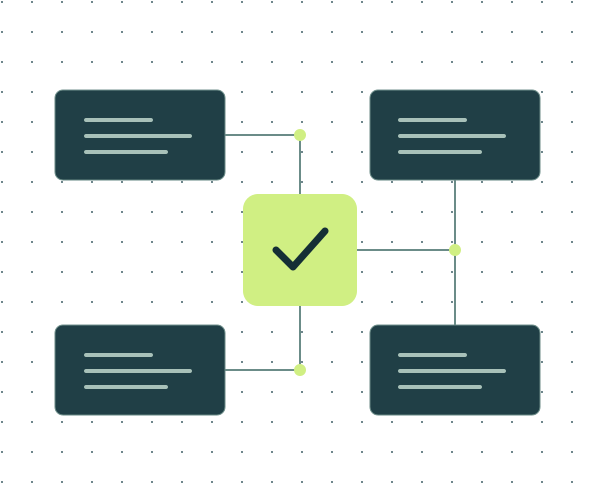

Lotus Notes & Domino
Keep essential applications running, resolve problems, and make improvements informed by the way your business works.
Explore Notes & Domino →Experienced advice. Practical applications.
Lotus Notes and Domino consulting. ProcessIt support. Custom business applications. LOGICA helps you care for the software you depend on—and create the tools you need next.

Clarity. Continuity. Forward progress.How we can help
Keep essential applications running, resolve problems, and make improvements informed by the way your business works.
Explore Notes & Domino →Find experienced help for the ProcessIt applications your organization continues to rely on.
Get ProcessIt support →Turn a manual process or focused business need into a useful application, with technology selected around your requirements.
Explore app development →Sound familiar?
A key developer has moved on. An established workflow needs to change. A spreadsheet has become a system of its own. These are business problems before they are technology problems.
We start by understanding how the work gets done, what people rely on, and where the friction lies. Then we help you choose a sensible path: maintain, improve, extend, or build.
Business analysis, application development, and process improvement belong in the same conversation.
Selected experience
Supporting critical Notes/Domino applications when internal technical expertise retired.
Read the example →Replacing paper-based education processes with applications for time, leave, and reimbursement.
Read the example →Developing a Domino-based travel application around an automotive manufacturer’s requirements.
Read the example →The LOGICA approach
Decades of consulting, business analysis, and software development experience—applied to the problem in front of you.
Work begins with listening. We translate operational needs into clear requirements, keep the scope practical, and involve the people who will use the result.
More about LOGICA →A practical next step
A critical application. A recurring bottleneck. An idea worth exploring.